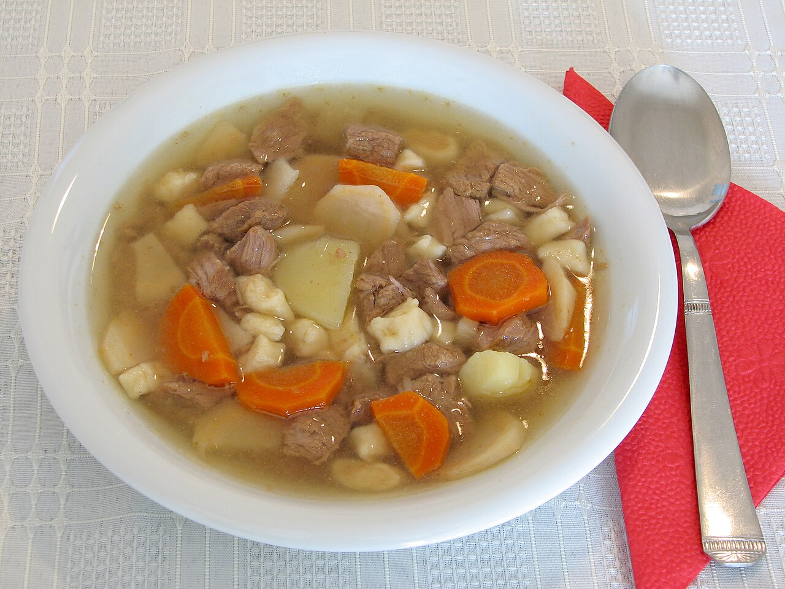
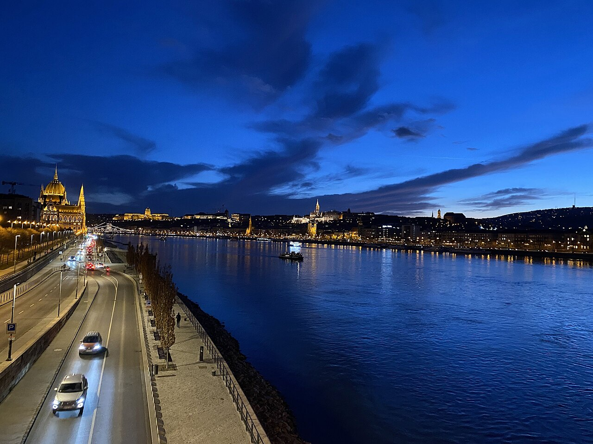
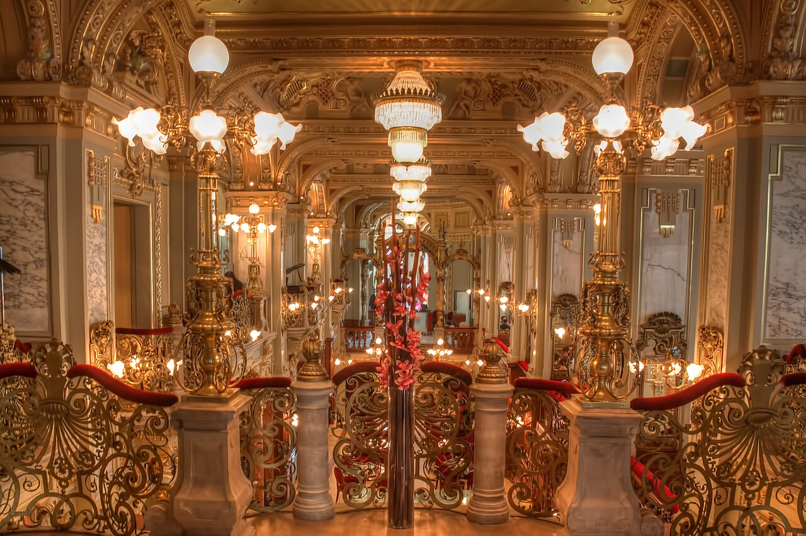
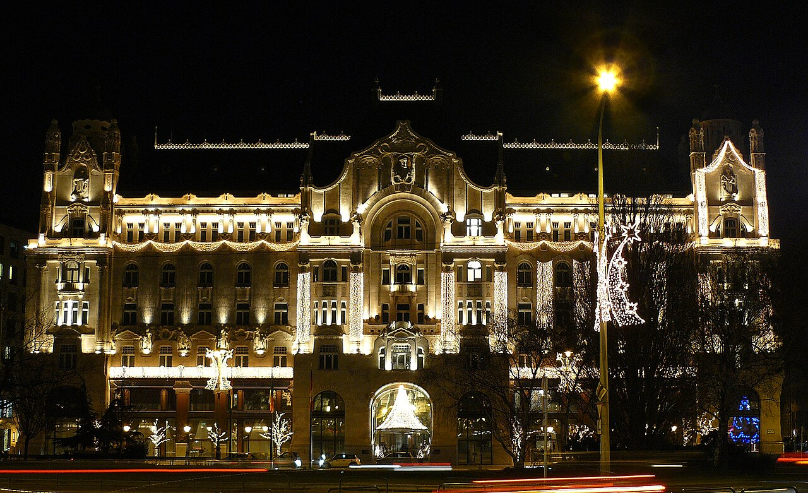
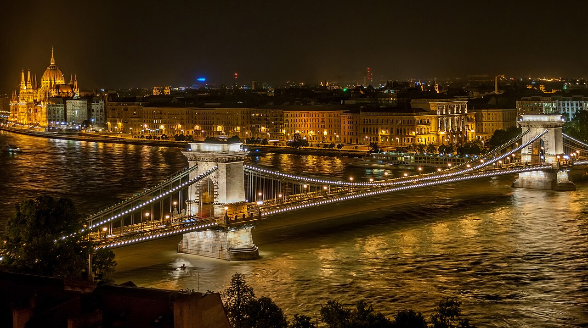
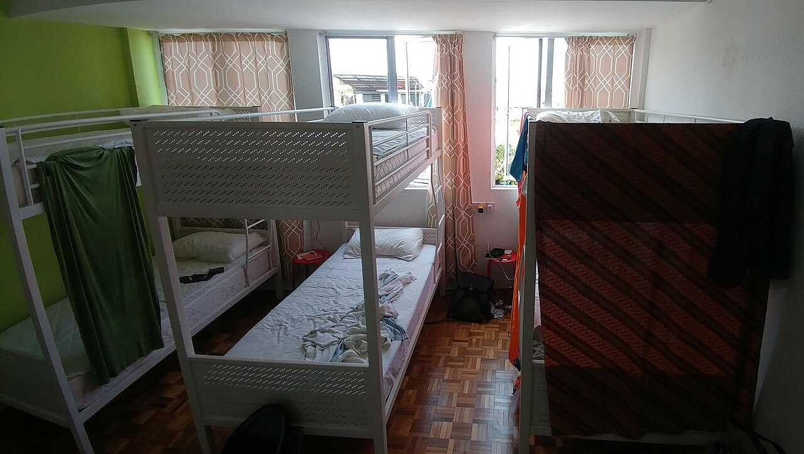

🍛 Gastronomia
Tradycyjna kuchnia węgierska
Papryka i smaki
Dania narodowe

Tradycyjna kuchnia węgierska – smak papryki i domowej gościnności
Kuchnia węgierska to jedna z najbardziej wyrazistych i aromatycznych kuchni Europy Środkowej. Słynie z intensywnych smaków, dużej ilości przypraw oraz oczywiście papryki, która stała się jej znakiem rozpoznawczym.
Gulász – narodowa duma Węgier
Gulyás to najbardziej znane danie węgierskie. Wbrew popularnym wersjom z zagranicy, oryginalny gulasz to bardziej zupa niż gęsty sos. Przygotowywany jest z wołowiny, cebuli, ziemniaków i dużej ilości papryki, często gotowany w kociołku nad ogniem (bogrács). To danie proste, ale niezwykle aromatyczne – idealne na chłodniejsze dni.
Pörkölt – gęstszy kuzyn gulaszu
Pörkölt to danie podobne do gulaszu, ale o dużo gęstszej konsystencji. Mięso duszone jest długo w sosie paprykowym, aż staje się miękkie i pełne smaku. Najczęściej podaje się je z kluskami Nokedli, które doskonale wchłaniają aromatyczny sos.
Lángos – street food w najlepszym wydaniu
Lángos to jedna z najpopularniejszych przekąsek węgierskich. Smażony placek drożdżowy podawany jest najczęściej z czosnkiem, śmietaną i startym serem. Można go kupić na targach, plażach i w budkach ulicznych – to szybka, sycąca i bardzo charakterystyczna przekąska.
Desery – słodka strona Węgier
Węgierskie desery również zasługują na uwagę. Jednym z najbardziej znanych jest Rétes, czyli strudel wypełniony jabłkami, makiem, wiśniami lub twarogiem. Doskonale komponuje się z kawą w tradycyjnej kawiarni w Budapeszcie.
Restauracje nad Dunajem
Widoki na miasto
Elegancja i klimat

Restauracje nad Dunajem w Budapeszcie – kolacja z widokiem na magię miasta
Budapeszt to jedno z tych miast, które najlepiej smakuje wieczorem. Restauracje położone nad Dunajem oferują nie tylko wyśmienitą kuchnię, ale przede wszystkim widoki, które trudno zapomnieć: oświetlony parlament, mosty odbijające się w wodzie i wzgórza Budy tonące w złotym świetle zachodu słońca.
Kolacja z widokiem na Parlament i Most Łańcuchowy
Wzdłuż nabrzeża Pesztu znajduje się wiele lokali, z których rozciąga się widok na najważniejsze zabytki miasta. Wiele restauracji oferuje tarasy nad samą wodą, dzięki czemu można jeść kolację niemal „nad rzeką".
Klimatyczne lokale po stronie Budy
Po stronie Budy znajdziemy bardziej kameralne restauracje, często ukryte na wzgórzach. W okolicach Zamku Królewskiego i Baszty Rybackiej znajdują się restauracje łączące tradycyjną kuchnię węgierską z eleganckim, historycznym otoczeniem.
Dlaczego warto zjeść nad Dunajem?
Kolacja nad Dunajem to coś więcej niż posiłek – to doświadczenie. Szum wody, światła miasta odbijające się w rzece i powoli płynące statki tworzą wyjątkowy klimat. To idealne zakończenie dnia pełnego zwiedzania Budapesztu.
Kawiarnie i street food
Lokalna kultura
Ruin bary

Kawiarnie i street food w Budapeszcie – smak miasta na co dzień
Budapeszt to miasto, które żyje nie tylko zabytkami i termami, ale także aromatem kawy i ulicznym jedzeniem. Spacerując jego ulicami, można w ciągu jednego dnia przejść od eleganckiej kawiarni z XIX wieku do tętniącego życiem food trucka lub ruin baru.
Klasyczne kawiarnie – elegancja i historia
Budapeszt słynie z tradycyjnych kawiarni, które przez lata były miejscem spotkań artystów, pisarzy i intelektualistów. Wiele z nich zachowało swój historyczny charakter – kryształowe żyrandole, zdobione sufity i eleganckie wnętrza. New York Café uważana jest za jedną z najpiękniejszych kawiarni na świecie.
Lángos – król ulicznego jedzenia
Jednym z najpopularniejszych elementów street foodu jest oczywiście lángos – smażony placek drożdżowy z czosnkiem, śmietaną i serem. To szybka, tania i bardzo sycąca przekąska, która stała się symbolem węgierskiego jedzenia ulicznego.
Ruin bary i food courty
W Budapeszcie wyjątkowym zjawiskiem są tzw. ruin bary – lokale urządzone w starych, często opuszczonych budynkach. Oprócz drinków znajdziemy tam street food – od burgerów po dania inspirowane kuchnią międzynarodową. To miejsca pełne energii, muzyki i kreatywnego klimatu.
🛏️ Noclegi
Hotele premium
Luksus i komfort
Widoki na Dunaj

Hotele premium w Budapeszcie – luksus nad Dunajem
Budapeszt to jedno z tych europejskich miast, gdzie luksusowe hotele są częścią samej historii. Wiele z nich mieści się w zabytkowych pałacach, z widokiem na Dunaj, Parlament i Most Łańcuchowy.
Four Seasons Hotel Gresham Palace
Najbardziej prestiżowy adres w mieście – secesyjny pałac tuż przy Moście Łańcuchowym. Wnętrza zachwycają marmurami, witrażami i historycznym przepychem, a z okien rozciąga się widok na Dunaj i Wzgórze Zamkowe. Często uznawany za najlepszy hotel w całym mieście.
Corinthia Hotel Budapest
Hotel o klasycznym, pałacowym charakterze z historią sięgającą XIX wieku. Oferuje jedno z najlepszych spa w mieście, basen oraz eleganckie restauracje. Idealny wybór dla osób szukających relaksu i atmosfery „starego świata".
Aria Hotel Budapest
Hotel wyróżniający się unikalnym konceptem – każdy pokój inspirowany jest innym stylem muzycznym. Największą atrakcją jest rooftop bar z panoramą na miasto, który wieczorem zamienia się w jedno z najbardziej klimatycznych miejsc w Budapeszcie.
Apartamenty i Airbnb
Niezależność
Lokalny klimat

Apartamenty i Airbnb w Budapeszcie – swoboda i lokalny klimat
Budapeszt to miasto, które doskonale nadaje się do wynajmu apartamentów na krótki pobyt. Oferta jest bardzo szeroka – od nowoczesnych loftów w centrum, przez klimatyczne mieszkania w kamienicach, aż po apartamenty z widokiem na Dunaj.
Dlaczego warto wybrać apartament?
Wynajem apartamentu daje przede wszystkim większą niezależność i przestrzeń niż standardowy hotel. Własna kuchnia pozwala na przygotowanie posiłków, a często także na bardziej komfortowy, „domowy" pobyt. To świetna opcja dla rodzin, grup znajomych oraz podróżujących na dłużej.
Lokalizacja ma znaczenie
Najpopularniejsze apartamenty znajdują się w ścisłym centrum Pesztu – w pobliżu Opery, Bazyliki Świętego Stefana czy nabrzeża Dunaju. Dzięki temu większość atrakcji można zwiedzać pieszo.
Styl i różnorodność mieszkań
Budapesztańskie apartamenty często mieszczą się w odrestaurowanych kamienicach, co nadaje im wyjątkowego charakteru. Wnętrza łączą historyczne elementy – wysokie sufity, sztukaterie – z nowoczesnym designem.
Komfort i udogodnienia
Współczesne apartamenty są dobrze wyposażone – Wi-Fi, klimatyzacja, aneks kuchenny czy pralka to już standard. Wiele obiektów oferuje też samodzielne zameldowanie, co ułatwia przyjazd o dowolnej porze.
Hostele budżetowe
Budżetowe
Społeczność podróżników

Hostele budżetowe w Budapeszcie – tanio, społecznie i w centrum miasta
Budapeszt to jeden z najpopularniejszych kierunków backpackerskich w Europie, a hostele są tu wyjątkowo dobrze rozwinięte. To idealna opcja dla osób, które chcą zaoszczędzić, poznać innych podróżników i mieszkać blisko atrakcji.
Dlaczego hostele w Budapeszcie są tak popularne?
Miasto przyciąga turystów niskimi cenami, świetnym transportem i bogatym życiem nocnym. Hostele często organizują wydarzenia, takie jak pub crawl, wspólne kolacje czy wycieczki po ruin barach, co sprawia, że łatwo poznać ludzi z całego świata.
Lokalizacja – klucz do wygody
Większość dobrych hosteli znajduje się w centrum Pesztu, szczególnie w dzielnicach V, VI i VII. Dzięki temu masz wszędzie blisko: do metra, ruin barów, Dunaju i głównych atrakcji. Popularne miejsca często oferują recepcję 24/7, przechowalnie bagażu i wspólne kuchnie.
Atmosfera – bardziej jak wspólne mieszkanie niż hotel
Hostele w Budapeszcie są znane z bardzo towarzyskiego klimatu. Wspólne pokoje i przestrzenie sprzyjają rozmowom, a wielu podróżników przyjeżdża tu solo właśnie po to, żeby poznać nowych ludzi z całego świata – od studentów po cyfrowych nomadów.